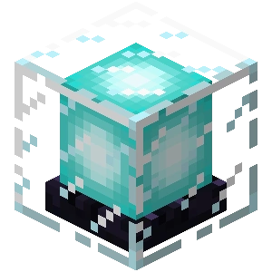

| Renown |
|  |
| Name | Renown Cost | Description |
| Tenacity | Tier I: 10 Renown, prestige I | Heal 0.5♥ per tier on kill. |
| Tier II: 50 Renown, prestige II | ||
| Autobuy | 5 Renown, prestige I | Allows players to automatically buy items when they respawn. This upgrade is toggleable. |
| Scam Artist | Tier I: 10 Renown, prestige I | Decreases the price of contracts, upgrades, killstreaks, and the Mystic Well by 5% per tier. |
| Tier II: 20 Renown, prestige II | ||
| Tier III: 30 Renown, prestige III | ||
| Tier IV: 40 Renown, prestige IV | ||
| Tier V: 50 Renown, prestige V | ||
| Renown Gold Boost | Tier I: 5 Renown, prestige I | Gain +2.5% gold on kills and gold pickups per tier. |
| Tier II: 10 Renown, prestige II | ||
| Tier III: 10 Renown, prestige III | ||
| Tier IV: 10 Renown, prestige IV | ||
| Tier V: 10 Renown, prestige V | ||
| Tier VI: 10 Renown, prestige VI | ||
| Tier VII: 10 Renown, prestige VII | ||
| Tier VIII: 10 Renown, prestige VIII | ||
| Tier IX: 10 Renown, prestige IX | ||
| Tier X: 10 Renown, prestige X | ||
| Renown XP Bump | Tier I: 5 Renown, prestige I | Gain +1 XP on kill per tier. |
| Tier II: 10 Renown, prestige III | ||
| Tier III: 10 Renown, prestige V | ||
| Tier IV: 10 Renown, prestige VII | ||
| Tier V: 10 Renown, prestige IX | ||
| Tier VI: 10 Renown, prestige XIII | ||
| Tier VII: 20 Renown, prestige XV | ||
| Tier VIII: 40 Renown, prestige XVII | ||
| Tier IX: 60 Renown, prestige XIX | ||
| Tier X: 80 Renown, prestige XXI | ||
| Mysticism | Tier I: 10 Renown, prestige I | Grants a chance for mystic swords, bows, and fresh pants to drop from kills. Unlocks the Mystic Well. |
| Tier II: 5 Renown, prestige I | +30% chance to drop mystics. | |
| Tier III: 5 Renown, prestige I | +20% chance to drop mystics (+50% total). | |
| Tier IV: 10 Renown, prestige I | Mystic items can be upgraded to Tier III. Fresh pants can now be dropped. | |
| Tier V: 10 Renown, prestige I | +20% chance to drop mystics (+70% total). | |
| Tier VI: 10 Renown, prestige I | +30% chance to drop mystics (+100% total). | |
| Tier VII: 15 Renown, prestige I | +20% chance to drop mystics (+120% total). | |
| Tier VIII: 15 Renown, prestige I | +30% chance to drop mystics (+150% total). | |
| Tier IX: 20 Renown, prestige I | Pants can now be enchanted in the Mystic Well. | |
| Tier X: 25 Renown, prestige I | +50% chance to drop mystics (+200% total). | |
| Overheal | 10 Renown, prestige I | All healing item limits are doubled. This is a perk unlock. You must purchase the perk and activate it in the upgrades shop. |
| Iron Pack | 5 Renown, prestige I | Adds the Iron Pack, a full set of iron armor excluding the helmet, to the Item Shop. Costs 100g. This is a shop item, not a permanent upgrade. |
| Name | Renown Cost | Description |
| Contractor | Tier I: 5 Renown, prestige II | Gain +1 max contract per tier every day. |
| Tier II: 10 Renown, prestige III | ||
| Tier III: 10 Renown, prestige IV | ||
| Tier IV: 10 Renown, prestige V | ||
| Tier V: 15 Renown, prestige VI | ||
| Superb Launch Trail | 10 Renown, prestige II | Creates a rainbow trail behind the player when using a slime launcher. Cosmetic. |
| Barbarian | 10 Renown, prestige II | Your iron sword is replaced with an iron axe. Diamond swords from the shop are replaced with diamond axes. Axes deal 1 more damage than their counterpart swords. This is a perk unlock. You must purchase the perk and activate it in the upgrades shop. |
| Dirty | 15 Renown, prestige II | Gain Resistance II for 4 seconds on kill. This is a perk unlock. You must purchase the perk and activate it in the upgrades shop. |
| Obsidian Stack | 5 Renown, prestige II | Adds the Obsidian Stack item to the Item Shop. Gives 64 obsidian when purchased. Costs 240g (25% cheaper than usual). This is a shop item, not a permanent upgrade. |
| Name | Renown Cost | Description |
| Extra Perk Slot | 40 Renown, prestige III | Grants a fourth perk slot available at level 100. |
| Impatient | 10 Renown, prestige III | Permanent Speed II while in the spawn area. Toggleable. |
| Fishing Club | Tier I: 5 Renown, prestige III | Gain the ability to catch fish. |
| Tier II: 5 Renown, prestige III | Catch 25 XP in addition to everything caught. | |
| Tier III: 5 Renown, prestige IV | Gain the ability to catch diamond armor. Excludes helmet. | |
| Tier IV: 5 Renown, prestige V | Fish 20% faster. | |
| Tier V: 10 Renown, prestige VII | Gain the ability to catch Fresh Aqua Pants. | |
| Rambo | 15 Renown, prestige III | Lose 2♥ max health. Heal to full on kill. This is a perk unlock. You must purchase the perk and activate it in the upgrades shop. |
| Diamond Leggings | 20 Renown, prestige III | Adds Diamond Leggings to the Item Shop for 1200g. This is a shop item, not a permanent upgrade. |
| Combat Spade | 10 Renown, prestige III | Adds Combat Spades to the Item Shop for 750g. Combat Spades are diamond shovels with the same base damage as a diamond sword, and deal +1 damage per diamond armor piece the target is wearing. This is a shop item, not a permanent upgrade. |
| Beastmode | 10 Renown, prestige III | Unlocks the Beastmode killstreak bundle and megastreak. |
| Name | Renown Cost | Description |
| Extra Hearts | Tier I: 20 Renown, prestige IV | Increases max health by 1♥ per tier. |
| Tier II: 100 Renown, prestige VI | ||
| Extra Killstreak Slot | 50 Renown, prestige IV | Grants a third killstreak slot available at level 100. |
| Armory | Tier I: 5 Renown, prestige IV | Spawn with +8 arrows per tier. |
| Tier II: 5 Renown, prestige IV | ||
| Tier III: 5 Renown, prestige IV | ||
| Tier IV: 5 Renown, prestige IV | ||
| Olympus | 20 Renown, prestige IV | Golden apples are replaced with Olympus Potions. Olympus Potions grant Speed I (0:24), Regeneration III (0:10), Resistance II (0:04), and 27 XP (can be increased by XP Boost passive) when drank. Can only hold one potion. This is a perk unlock. You must purchase the perk and activate it in the upgrades shop. |
| Hermit | 20 Renown, prestige IV | Unlocks the Hermit bundle and megastreak. |
| Name | Renown Cost | Description |
| Fancy Hat | 10 Renown, prestige V | Permanent leather helmet. Can be dyed to a custom color for 2000g. |
| First Strike | 25 Renown, prestige V | The first hit on a player deals +35% damage and grants Speed I (5s). This is a perk unlock. You must purchase the perk and activate it in the upgrades shop. |
| Assistant Streaker | 15 Renown, prestige V | Assists count their participation percentage towards killstreaks. This is a perk unlock. You must purchase the perk and activate it in the upgrades shop. |
| First-Aid Egg | 15 Renown, prestige V | Unlocks the First-Aid Egg shop item. When right clicked, heal 2.5♥. 30s cooldown. Reduce cooldown by 5s on kill. Costs 200g. This is a shop item, not a permanent upgrade. |
| Name | Renown Cost | Description |
| Yummy! | 15 Renown, prestige VI | Grants 6 gold when eating a Golden Apple or Golden Head. |
| Heresy | Tier I: 10 Renown, prestige VI | Grants the ability to gain Chunks of Vile from Big Time contracts and Night Quests. Dark pants can now be crafted at night for 5 Chunks of Vile and 2 renown. |
| Tier II: 20 Renown, prestige ??? | Deal +5% damage on players wearing leather armor. Decreases the cost of Dark pants to 4 Chunks of Vile. | |
| Tier III: 50 Renown, prestige ??? | Dark pants can be enchanted to Tier II (requires Mysticism IX). Decreases the cost of Dark pants to 3 Chunks of Vile. | |
| Divine Intervention | Tier I: 50 Renown, prestige VI | Grants a 5% chance to keep a player's inventory on death, preventing shop items from disappearing and mystic items from losing a life. |
| Tier II: 50 Renown, prestige ??? | ||
| Tier III: 50 Renown, prestige ??? | ||
| Blazing Launch Trail | 30 Renown, prestige VI | Creates a trail made of fire particles when using a slime launcher. Cosmetic. |
| Marathon | 20 Renown, prestige VI | Cannot wear boots. While the player has speed, deal +18% damage and take -18% less damage. This is a perk unlock. You must purchase the perk and activate it in the upgrades shop. |
| Bounty Solvent | 10 Renown, prestige VI | Grants the Bounty Solvent effect (1:00). Take 30% less damage from players with bounties, and gain 50% more gold from claimed bounties. Costs 575g. The effect time remaining can be viewed in the scoreboard. This is a shop item, not a permanent upgrade. |
| Name | Renown Cost | Description |
| Apollo | 25 Renown, prestige VII | When launching, land at the spawn point closest to where you are looking instead of a random one. Toggleable. |
| Soup | 30 Renown, prestige VII | Instead of a golden apple, receive a Tasty Soup when killing a player. Tasty Soup gives Speed for 7 seconds, 1.5&hearts, 1♥ of Absorption, and a 15% damage boost on the player's next hit. On assist, receive an Assist Soup, granting 1♥ of Absorption, 5 seconds of Regeneration II, 7 seconds of Speed, and a 15% damage boost on the player's next hit. Can hold up to four soups. This is a perk unlock. You must purchase the perk and activate it in the upgrades shop. |
| Recon | 20 Renown, prestige VII | Every fourth arrow hit on a player deals +50% damage and grants the user +40 XP. This is a perk unlock. You must purchase the perk and activate it in the upgrades shop. |